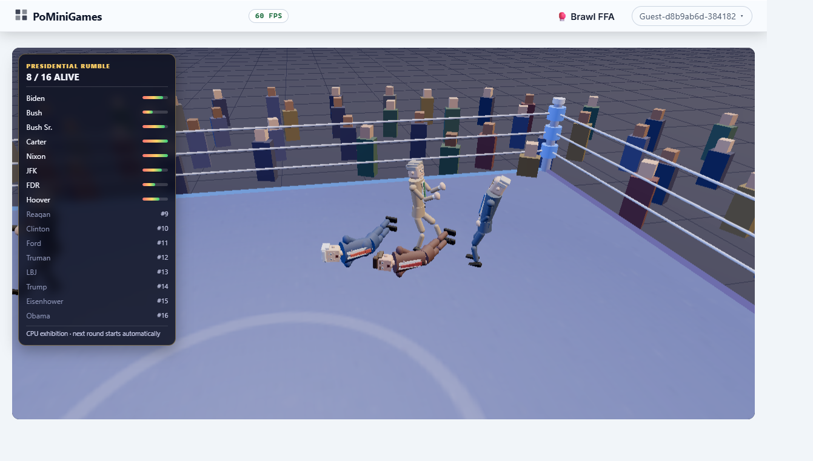
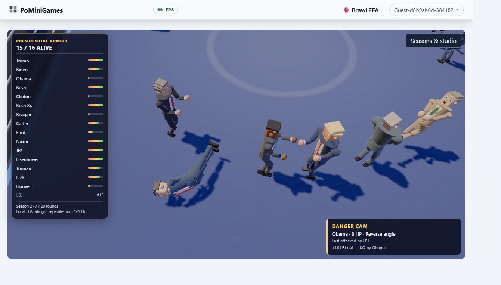
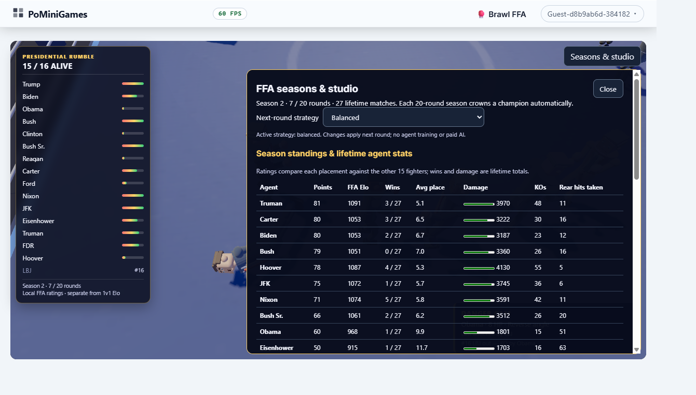
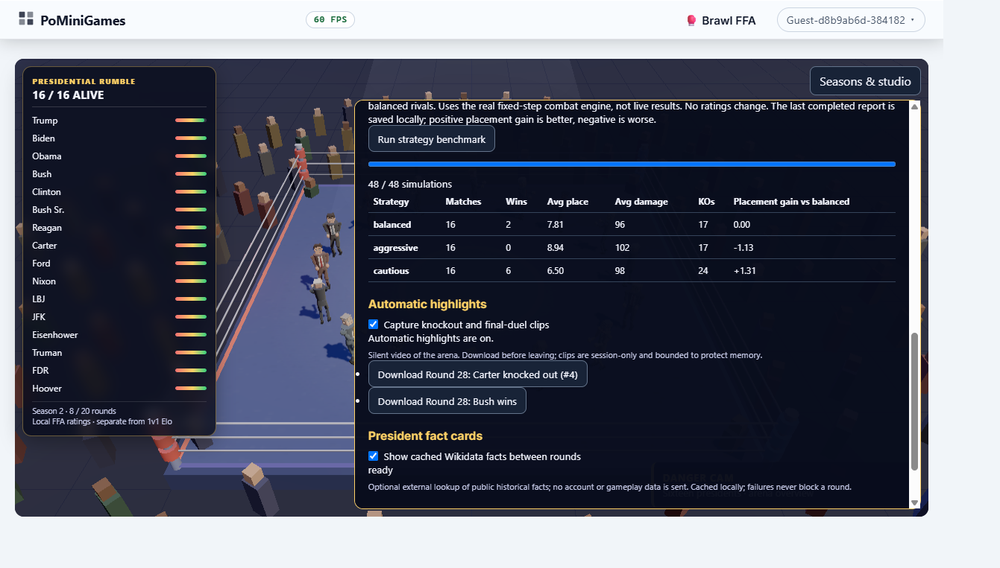

Before: a looping exhibition

One match at a time, with no persistent FFA record or production studio.
After: upgraded broadcast

Adaptive studio rendering, danger-camera captions, final-duel coverage and automatic silent highlights.
Persistent seasons and agent dashboard

20-round seasons progress without clicks. Browser-local ratings and agent statistics survive reloads.
Complete spectator workflows

One-click paired strategy experiments, downloadable clips, and optional cached CC0 Wikidata facts.